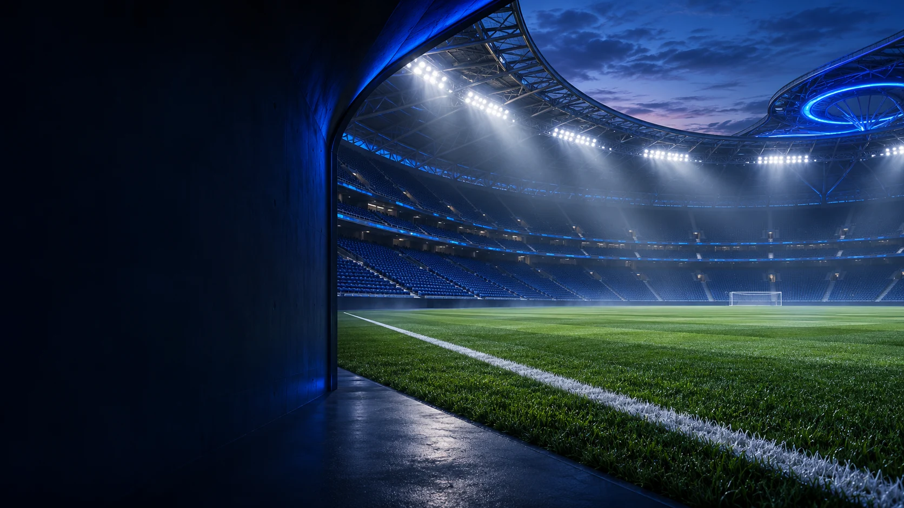
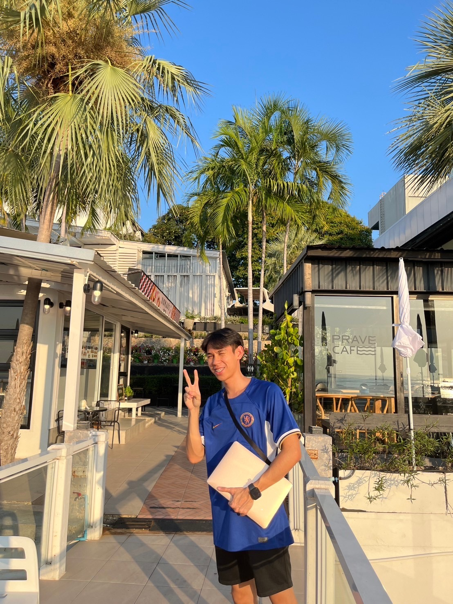

ความเห็นหลังเกมของโอห์ม
กำลังโหลดบันทึกที่เผยแพร่…

ไม่ใช่แค่ทีมที่เชียร์
อ้ายโอห์ม แฟนเชลซี — จากการเชียร์ผ่านหน้าจอ
สู่ความฝันที่จะยืนอยู่ข้างสนามด้วยตัวเอง
A DIFFERENT KIND OF BLUE
ลองเปลี่ยนบรรยากาศของโลกใบนี้
เลือกแสงที่เป็นคุณ แล้วออกไปสำรวจเรื่องราวของโอห์ม

01 / THE PERSON BEHIND THE BLUEBEHIND THE BLUE
ผมโอห์มครับ เริ่มเชียร์เชลซีตั้งแต่อายุ 15 ปี และอยากมีสักวันที่ได้ไปเชียร์ทีมรักที่สแตมฟอร์ดบริดจ์ด้วยตัวเอง
นักเตะในดวงใจ
โค้ชที่ชื่นชอบ
CHELSEA · PREMIER LEAGUE
นัดถัดไปของเชลซีในพรีเมียร์ลีก · เวลาไทย
กำลังโหลดนัดถัดไปให้อัตโนมัติ…